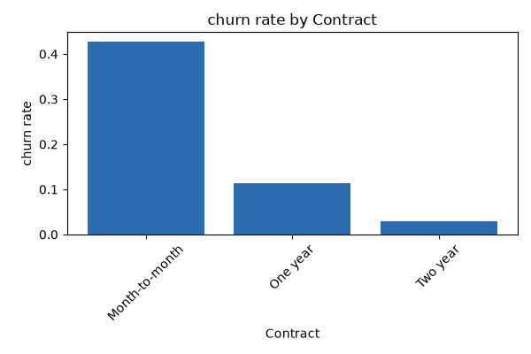
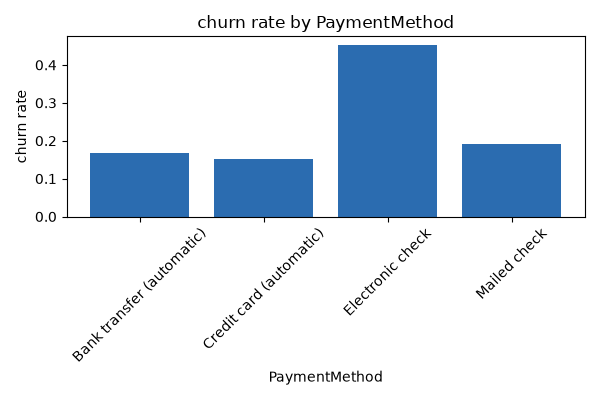
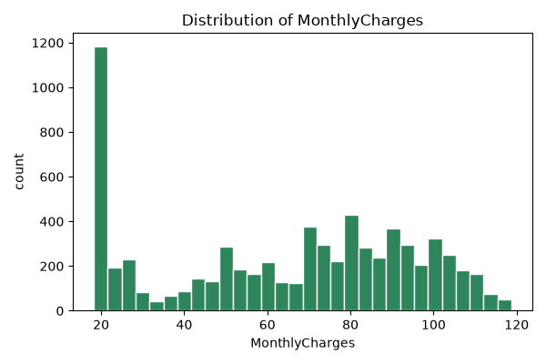

Key Insights on Customer Churn at Harbor & Vale
| Key | Value |
|---|---|
| dataset.row_count | 7043 |
| dataset.column_count | 21 |
| churn.positive_rate | 0.2653698707936959 |
| churn.positive_count | 1869 |
| churn.negative_count | 5174 |
| customerID.unique_count | 7043 |
| gender.unique_count | 2 |
| gender.target_rate_by_category.Female | 0.26920871559633025 |
| gender.target_rate_by_category.Male | 0.2616033755274262 |
| SeniorCitizen.count | 7043 |
| SeniorCitizen.mean | 0.1621468124378816 |
| SeniorCitizen.median | 0.0 |
| SeniorCitizen.std | 0.3686116056100131 |
| SeniorCitizen.min | 0.0 |
| SeniorCitizen.max | 1.0 |
| Partner.unique_count | 2 |
| Partner.target_rate_by_category.No | 0.32957978577313923 |
| Partner.target_rate_by_category.Yes | 0.1966490299823633 |
| Dependents.unique_count | 2 |
| Dependents.target_rate_by_category.No | 0.3127914048246503 |
| Dependents.target_rate_by_category.Yes | 0.15450236966824646 |
| tenure.count | 7043 |
| tenure.mean | 32.37114865824223 |
| tenure.median | 29.0 |
| tenure.std | 24.55948102309446 |
| tenure.min | 0.0 |
| tenure.max | 72.0 |
| PhoneService.unique_count | 2 |
| PhoneService.target_rate_by_category.No | 0.24926686217008798 |
| PhoneService.target_rate_by_category.Yes | 0.2670963684955196 |
| MultipleLines.unique_count | 3 |
| MultipleLines.target_rate_by_category.No | 0.2504424778761062 |
| MultipleLines.target_rate_by_category.No phone service | 0.24926686217008798 |
| MultipleLines.target_rate_by_category.Yes | 0.286098956580276 |
| InternetService.unique_count | 3 |
| InternetService.target_rate_by_category.DSL | 0.1895910780669145 |
| InternetService.target_rate_by_category.Fiber optic | 0.4189276485788114 |
| InternetService.target_rate_by_category.No | 0.07404980340760157 |
| OnlineSecurity.unique_count | 3 |
| OnlineSecurity.target_rate_by_category.No | 0.4176672384219554 |
| OnlineSecurity.target_rate_by_category.No internet service | 0.07404980340760157 |
| OnlineSecurity.target_rate_by_category.Yes | 0.14611193660227836 |
| OnlineBackup.unique_count | 3 |
| OnlineBackup.target_rate_by_category.No | 0.39928756476683935 |
| OnlineBackup.target_rate_by_category.No internet service | 0.07404980340760157 |
| OnlineBackup.target_rate_by_category.Yes | 0.21531494442157267 |
| DeviceProtection.unique_count | 3 |
| DeviceProtection.target_rate_by_category.No | 0.3912762520193861 |
| DeviceProtection.target_rate_by_category.No internet service | 0.07404980340760157 |
| DeviceProtection.target_rate_by_category.Yes | 0.2250206440957886 |
| TechSupport.unique_count | 3 |
| TechSupport.target_rate_by_category.No | 0.4163547365390153 |
| TechSupport.target_rate_by_category.No internet service | 0.07404980340760157 |
| TechSupport.target_rate_by_category.Yes | 0.15166340508806261 |
| StreamingTV.unique_count | 3 |
| StreamingTV.target_rate_by_category.No | 0.33523131672597867 |
| StreamingTV.target_rate_by_category.No internet service | 0.07404980340760157 |
| StreamingTV.target_rate_by_category.Yes | 0.30070188400443293 |
| StreamingMovies.unique_count | 3 |
| StreamingMovies.target_rate_by_category.No | 0.33680430879712747 |
| StreamingMovies.target_rate_by_category.No internet service | 0.07404980340760157 |
| StreamingMovies.target_rate_by_category.Yes | 0.29941434846266474 |
| Contract.unique_count | 3 |
| Contract.target_rate_by_category.Month-to-month | 0.4270967741935484 |
| Contract.target_rate_by_category.One year | 0.11269517990495587 |
| Contract.target_rate_by_category.Two year | 0.02831858407079646 |
| PaperlessBilling.unique_count | 2 |
| PaperlessBilling.target_rate_by_category.No | 0.1633008356545961 |
| PaperlessBilling.target_rate_by_category.Yes | 0.33565092304003835 |
| PaymentMethod.unique_count | 4 |
| PaymentMethod.target_rate_by_category.Bank transfer (automatic) | 0.16709844559585493 |
| PaymentMethod.target_rate_by_category.Credit card (automatic) | 0.15243101182654403 |
| PaymentMethod.target_rate_by_category.Electronic check | 0.4528541226215645 |
| PaymentMethod.target_rate_by_category.Mailed check | 0.19106699751861042 |
| MonthlyCharges.count | 7043 |
| MonthlyCharges.mean | 64.76169246059918 |
| MonthlyCharges.median | 70.35 |
| MonthlyCharges.std | 30.090047097678493 |
| MonthlyCharges.min | 18.25 |
| MonthlyCharges.max | 118.75 |
| TotalCharges.unique_count | 6531 |



Customers with month-to-month contracts have a churn rate of 42.7%, compared to just 2.8% for two-year contracts (Contract.target_rate_by_category.Two year).
Business implication: This stark difference indicates that contract length is a significant factor in customer retention, suggesting that customers on shorter contracts are more likely to leave.
Recommended action: Implement incentives to encourage month-to-month customers to switch to longer-term contracts, such as discounts or loyalty rewards.
evidence: Contract.target_rate_by_category.Month-to-month
There is a positive correlation of 0.193 between MonthlyCharges and churn, indicating that as monthly charges increase, so does the likelihood of churn.
Business implication: This suggests that customers may perceive higher charges as less value, leading to dissatisfaction and increased churn.
Recommended action: Review pricing strategies and consider offering tiered pricing or value-added services to justify higher charges and improve customer satisfaction.
evidence: MonthlyCharges.mean
Customers with dependents have a churn rate of 15.5%, compared to 31.3% for those without (Dependents.target_rate_by_category.No).
Business implication: This indicates that households with dependents may have different needs and expectations from their service providers.
Recommended action: Tailor services and marketing efforts to better meet the needs of families, potentially reducing churn in this segment.
evidence: Dependents.target_rate_by_category.Yes
Customers using electronic checks have a churn rate of 45.3%, significantly higher than those using bank transfers (PaymentMethod.target_rate_by_category.Bank transfer (automatic)).
Business implication: This suggests that the payment method may affect customer satisfaction and retention.
Recommended action: Investigate the reasons behind higher churn among electronic check users and consider offering incentives for customers to switch to more stable payment methods.
evidence: PaymentMethod.target_rate_by_category.Electronic check
Churn rates are 26.9% for females and 26.2% for males, indicating a negligible difference (gender.target_rate_by_category.Female and gender.target_rate_by_category.Male).
Business implication: This suggests that gender is not a significant factor in customer retention strategies.
Recommended action: Focus retention efforts on other more impactful factors rather than gender-based segmentation.
evidence: gender.target_rate_by_category.Female